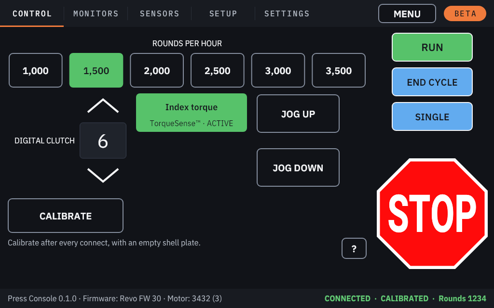
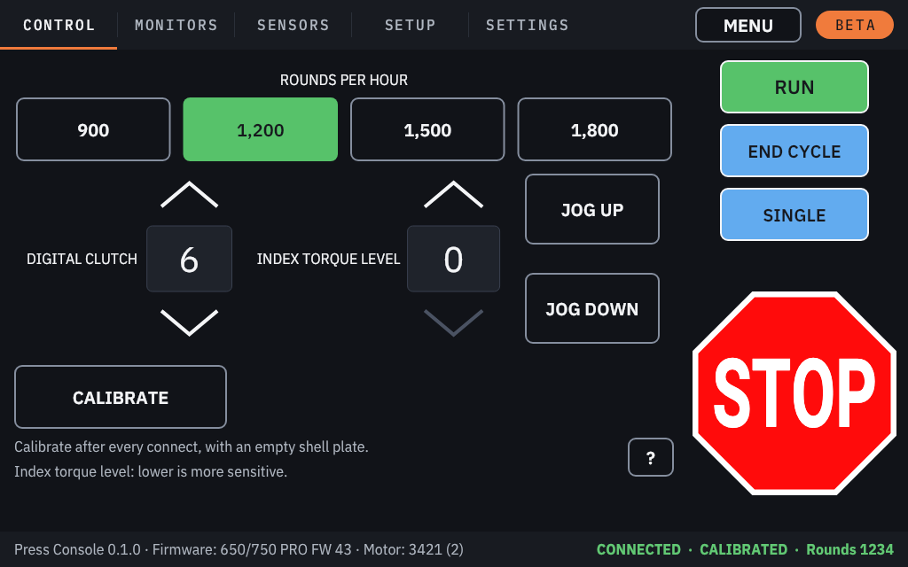
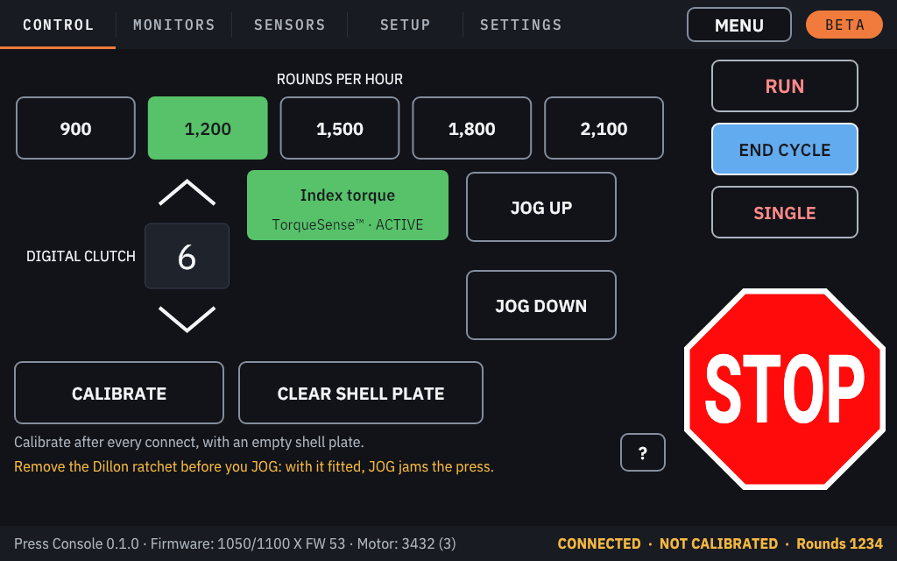

The press tabs¶
The press screen shows the tabs of your press model along the top:
| Press | Tabs |
|---|---|
| Evo, Revo, 650/750 X and PRO, 1050/1100 X and PRO, and the Evo PRO, Duals and GAP PRO | CONTROL, MONITORS, SENSORS, SETUP, SETTINGS |
| 1050/1100 LTE | CONTROL, SENSORS, SETTINGS |
| A press the console does not recognise | SETTINGS only (STOP-only mode) |
Before the press is identified (connecting, identifying, restoring its settings) or after a fault, the tabs say why they are not ready; the Settings tab stays usable.
The status bar at the bottom shows the console version, the press firmware and motor (the port is on the Settings tab), and on the right the state: CONNECTED, NOT CALIBRATED / CALIBRATING / CALIBRATED / RUNNING, the rounds per hour while running, and the round count.
Control¶

- ROUNDS PER HOUR: the speeds of your press model.
- DIGITAL CLUTCH: the torque limit for the stroke (on the 1050/1100 LTE: LOW, MED, HIGH, MAX). A jam above it stops the press with the Jam: Digital Clutch alert.
- Index torque (Mark 7's TorqueSense™, named on the button's second line): ACTIVE or BYPASSED. It stops the press when the shell plate meets resistance while it indexes, and it is switched ACTIVE every time the console connects.
- INDEX TORQUE LEVEL (650/750, instead of the Index torque switch): the torque while the shell plate indexes, below the clutch; lower is more sensitive (the 650 manual).
- Index Slowdown (1050/1100 LTE).
- JOG UP / JOG DOWN (models with jog), CALIBRATE, and CLEAR SHELL PLATE (1050/1100 models). See Calibrating and running.
- With a foot pedal set up: ARM PEDAL / DISARM PEDAL (Foot pedal).
Each model's Control tab looks a little different:
 |
 |
 |


Monitors¶

- ROUNDS: the rounds made, COUNTING / PAUSED, RESET, and STOP AFTER ROUNDS (0 = off).
- SUPPLIES REMAINING: primers, brass and projectiles left, each with an optional STOP AT level. Each round made takes one of each. When a supply reaches its stop level, the run ends at the end of that cycle.
- RUN is refused while a supply is already at its stop level: refill and correct the count, or switch that stop off.
Under the buttons, one short line says what matters most ("Calibrate after every connect, with an empty shell plate."). The ? button next to it opens the details; CLOSE (or STOP) closes them. Throughout the console a ? opens the longer explanation behind a short line, over the left part of the screen: RUN, END CYCLE, SINGLE and STOP stay where they are and keep working.
Numbers are typed on an on-screen number pad.
Sensors¶

Every sensor your press model has, each ACTIVE (green: its checks are on) or BYPASSED (black: the press ignores it). Tap a sensor to switch it. Each button shows the console port the sensor plugs into, from your press model's manual (PORT 3; the same as the Console ports page), and the buttons are in port order, lowest first: sensors that share a port sit side by side and both show it, and a sensor the manual gives no numbered port (the Machine Guard on most models) shows none and comes last. A sensor is named plainly (Bullet sensor), with Mark 7's name on its second line (BulletSense™ · ACTIVE). Short notes sit under the buttons; the ? at the top opens the full notes for your model. See Sensors and interlocks.
Setup¶

- DWELL AND INDEX: TOP DWELL (with ±10 buttons), INDEX SPEED, BOTTOM DWELL. On a 650/750 the bottom setting is Primer depth (0 = deepest): it sets how deep primers are seated; change it one step at a time, not while cycling, and check the seated primers with SINGLE before you RUN.
- SLOWDOWN: BOTTOM SLOWDOWN (for big brass; Evo, Revo and 1050/1100 models), or Top Slowdown on the 650/750.
- DIE SETUP: START DIE SETUP, the moves, FINISH DIE SETUP (Calibrating and running).
Settings¶
- The connection, the press model and firmware, the motor, and the screen layout in use.
- RECONNECT: disconnects and connects again. This restarts the press controller: calibrate again afterwards.
- CONSOLE PORTS: which sensor goes into which port (Console ports); not while the press moves.
STOP-only mode¶

If the press reports a firmware type the console does not know, you get only the Settings tab: RUN, END CYCLE and SINGLE are disabled, and STOP works. Use Mark 7's own console for such a press, or report its firmware version as an issue.